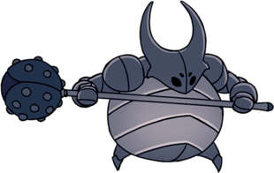

How to defeat the False Knight

Phase 1
The room where the False Knight spawns is a large room with a few lower tier enemies walking around. If you were to die facing the boss, your shade will spawn in the center of the room so that you cant retrieve it without spawning the boss. The only way to get the boss to spawn in is to approach the door on the other side of the room. After you do that he will drop from the ceiling and prepare to attack you. If you want, you can get a few hits off of him when he lands as he will not be able attack you. One of the two moves he will do is a large arching jump. He won't try to attack you so the only way to take damage is if he jumps on top of you, so avoid going under him. As soon as he lands you have a window which allow one or two attacks. The second of the two moves he will do is a shockwave attack. The False Knight pulls back his mace and hits the ground on one side of him. This sends out a shockwave which travels along the ground. The way to avoid this attack is to run away from him as soon as he goes back to do this attack, then jump towards him when the shockwave nears you. After you attack him enough he will collapse and his armor's headpiece will open up and you can attack his head. This will fill your soul charge up and send him into phase 2.
Phase 2
In phase 2, the False Knight uses the two attack outlined about and adds two more. One of the two new attacks is where he jumps in the air and swings the mace down in front of him. This attack can be easily avoided by either running under the False Knight or by running away. The one thing to remember is to not jump when he's in the air so that you don't get hit by the mace as it comes down. The second new attack is where the False Knight winds up and hits the ground on both sides of himself, this will hit the player is they aren't far enough away. This also causes rock to fall from the cieling which will injure the player if they aren't carful.
Killing the Boss
He will do this until the player hits him enough so that his head is exposed. You will have to expose his head about three times in total before he will do an attack that caves in the floor of the room you're in. When he does this you and the False Knight will fall through the floor and the False Knight's helmet will come off again. Just attack his head until he dies. When he dies, he will drop a City Crest, which you use to open the City of Tears.